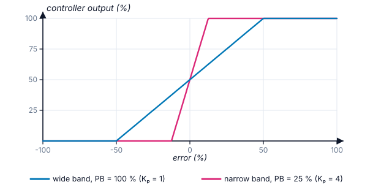
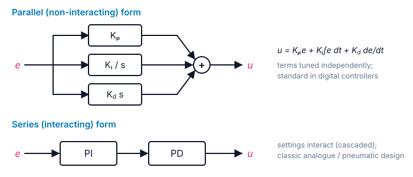
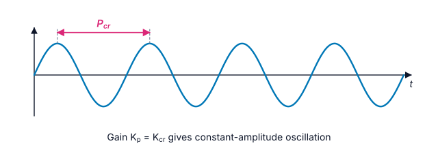
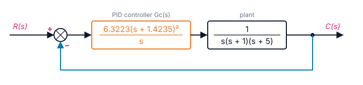

The idea of feedback is simple and yet extremely powerful. Feedback can reduce the effect of disturbances, make a system insensitive to process variations, and make a system follow commands faithfully. The PID controller is the simplest practical form of feedback, combining three modes: proportional, integral and derivative.
Anatomy of a control loop
$$e = r - b$$
The error is setpoint minus measurement. A positive error means the measurement is below the target; a negative error means it is above. Measurements and controller outputs are usually carried as standard signals (4–20 mA, 3–15 psi) or as percentages of range, so the same equations work for any physical variable.
Direct and reverse action
- Direct action: when the process variable goes up, the controller output goes up (for example, a level loop that opens an outlet valve as the level rises).
- Reverse action: when the process variable goes up, the controller output goes down (for example, a furnace whose fuel is cut back as the temperature rises).
The physics of the process
- Load change: a shift in some background parameter (inflow, ambient temperature) that pushes the controlled variable away from the setpoint.
- Self-regulation: some processes settle at a new value by themselves after a load change. Others (a tank pumped at a fixed rate) overflow or run dry without control.
- Dead time: the time before any corrective action is felt at all (for example, transport down a pipe). Lag: the further time the process (or the valve) takes to respond. Delays decide which controller mode will succeed.
The controller landscape
| Discontinuous modes (jumps) | Continuous modes (smooth) |
|---|---|
| Two-position (ON/OFF), multiposition, floating | Base modes: proportional (P), integral (I), derivative (D). Composite modes: PI, PD, PID. |
Two-position (ON/OFF) control
The most elementary control: the output is either 0 % or 100 %. Because of process lag the variable keeps oscillating about the setpoint, giving steady cycling. A neutral zone (hysteresis) stops the output chattering. It suits large-capacity, slow processes such as room heating (HVAC) and large liquid baths.
- Multiposition control adds intermediate output levels (for example 50 %), so the cycling is smaller, but it is still discontinuous.
- Single-speed floating control: the error sets the rate at which the output changes, not its size. With zero error the output "floats" and holds its setting.
Proportional (P) mode
The output is in one-to-one proportion to the error:
$$p = K_p\,e_p + p_0, \qquad PB = \frac{100}{K_p}\ \%$$
Here $K_p$ is the proportional gain, $e_p$ is the error in percent and $p_0$ is the output with zero error. The proportional band (PB) is the range of error that drives the output from 0 to 100 %; it is inversely related to the gain.

The proportional flaw: offset. After a load change the controller needs a new output to hold the process. The equation can only give an output different from $p_0$ if an error exists. So the variable settles with a permanent offset, parallel to but below the setpoint.
Integral (I) mode: the offset killer
$$p(t) = K_i\int_0^t e\,dt + p(0)$$
As long as the error is not zero, the integral output keeps ramping up or down: it uses the past (accumulated error) to push the system. Because it never stops while an error exists, integral action guarantees that the offset is eventually removed. The price is a slower, more oscillatory response.
Derivative (D) mode: anticipation
$$p(t) = K_p T_d\frac{de}{dt}$$
The derivative term reacts to the rate of change of the error: it looks into the future and applies braking before the overshoot happens. It has no effect on a constant error, so it is never used alone. It amplifies measurement noise, and a sudden setpoint step gives a large output spike ("derivative kick").
The ideal PID controller
$$u(t) = K_c\left[e(t) + \frac{1}{T_i}\int_0^t e(\tau)\,d\tau + T_d\frac{de(t)}{dt}\right] + u_0 \qquad\Longleftrightarrow\qquad G_c(s) = K_p + \frac{K_i}{s} + K_ds$$
| Proportional (P) | Integral (I) | Derivative (D) |
|---|---|---|
| Reacts to the present error size. | Accumulates the past error (removes offset). | Anticipates the future from the rate of change. |
With $K_i = K_c/T_i$ and $K_d = K_cT_d$, increasing $K_i$ is the same as decreasing the integral time $T_i$.

Textbook illusion and industrial reality
Theory assumes infinite actuator bandwidth, smooth setpoints and noise-free measurements. Real loops meet actuator saturation, valve stiction, sensor noise, derivative kick and transport delay. Industrial controllers add anti-windup, derivative filtering and "derivative on measurement" to protect the hardware and keep the loop stable.
Building up P, PD and PID
Take the plant $G(s) = \dfrac{1}{s^2 + 10s + 20}$ with unity feedback and a unit step. P provides the muscle, D provides the brakes, and I provides the final precision.
| Increase | Rise time | Overshoot | Settling time | Steady-state error |
|---|---|---|---|---|
| $K_p$ | Decreases | Increases | Small change | Decreases |
| $K_i$ | Decreases | Increases | Increases | Eliminated |
| $K_d$ | Small change | Decreases | Decreases | No change |
These are trends, not laws: the gains interact, so changing one can alter the effect of another.
Choosing a controller
| Mode | Complexity | Behaviour | Offset? | Ideal use |
|---|---|---|---|---|
| Two-position (ON/OFF) | Low | Steady cycling | n/a | Large, slow processes (HVAC) |
| Floating | Medium | Cyclic transient | No | Small capacity, little lag |
| Proportional (P) | Medium | Smooth | Yes, permanent | Moderate lag, rare load changes |
| PI | High | Smooth | Eliminated | Frequent load changes (flow, level) |
| PID | Highest | Highly responsive | Eliminated | Complex, fast-changing systems (temperature) |
A good loop balances five criteria: stability (the baseline), disturbance rejection, smooth tracking of setpoint changes, minimum error and robustness to unknown changes in the plant. They conflict, so control engineering is the art of balance.
Electronic PI controller with op-amps
An error-detector circuit compares the transmitter signal with a setpoint voltage set by a potentiometer, giving $V_e = V_{sp} - IR$. Op-amps then build the controller:
$$V_{out} = \underbrace{\frac{R_f}{R_{s1}}\frac{R_p}{R_1}}_{K_p}V_e + \underbrace{\frac{R_f}{R_{s2}}\frac{1}{R_iC_i}}_{K_i}\int V_e\,dt$$
In a temperature loop this output drives the steam valve of a heated tank, so the electronic PI controller continuously adjusts the heat input to hold the tank at its setpoint.
Pneumatic controllers
Before electronics, and still in hazardous areas, controllers ran on 3–15 psi air. A flapper (baffle) and nozzle detects tiny movements of a lever. The process variable and setpoint act on opposing bellows; any imbalance tilts the beam about its fulcrum, changing how much the flapper blocks the nozzle. The nozzle back-pressure, boosted by a relay, becomes the output to the control valve. A feedback bellows pushes back on the beam until the forces balance again: this force-balance principle gives proportional action, and restrictors in the feedback line add integral and derivative action.
Tuning: finding the gains in practice
Perfect mathematical models of real plants are rarely available. Engineers use empirical rules, first published in the 1940s and 1950s, to get starting values of $K_p$, $T_i$ and $T_d$ from simple experiments on the plant.
| Ziegler–Nichols 1st method | Ziegler–Nichols 2nd method | Cohen–Coon | |
|---|---|---|---|
| Test | Open loop (reaction curve) | Closed loop (sustained oscillation) | Open loop (reaction curve) |
| Rule of use | S-shaped response; dead time less than about half the time constant | Plant can be driven to sustained oscillation under P control only | Handles dead time up to about twice the time constant |
| Output | $L$ and $T$ | $K_{cr}$ and $P_{cr}$ | $K$, $L$ and $T$; explicit PD rules too |
Ziegler–Nichols first method (reaction curve)
- Put the controller in manual and apply a step change to the controller output.
- Record the process variable: it should rise in an S shape.
- Draw the tangent at the steepest point (the inflection point).
- Where the tangent crosses the time axis gives the dead time $L$; where it reaches the final value gives $L + T$.

| Controller | $K_p$ | $T_i$ | $T_d$ |
|---|---|---|---|
| P | $T/L$ | $\infty$ | 0 |
| PI | $0.9\,T/L$ | $L/0.3$ | 0 |
| PID | $1.2\,T/L$ | $2L$ | $0.5L$ |
For PID this gives $G_c(s) = 1.2\dfrac{T}{L}\left(1 + \dfrac{1}{2Ls} + 0.5Ls\right) = 0.6T\dfrac{(s + 1/L)^2}{s}$: a pole at the origin and a double zero at $s = -1/L$. (For a process with steady-state gain $K$, divide $K_p$ by $K$.)
Cohen–Coon rules
Ziegler–Nichols struggles when the dead time is large. Cohen–Coon copes with dead time up to about twice the time constant, and it also gives rules for PD controllers. With process gain $K$:
| Controller | $K_c$ | $T_i$ | $T_d$ |
|---|---|---|---|
| P | $\dfrac{1}{K}\dfrac{T}{L}\left(1 + \dfrac{L}{3T}\right)$ | – | – |
| PI | $\dfrac{1}{K}\dfrac{T}{L}\left(0.9 + \dfrac{L}{12T}\right)$ | $L\dfrac{30 + 3L/T}{9 + 20L/T}$ | – |
| PD | $\dfrac{1}{K}\dfrac{T}{L}\left(1.25 + \dfrac{L}{6T}\right)$ | – | $L\dfrac{6 - 2L/T}{22 + 3L/T}$ |
| PID | $\dfrac{1}{K}\dfrac{T}{L}\left(1.33 + \dfrac{L}{4T}\right)$ | $L\dfrac{32 + 6L/T}{13 + 8L/T}$ | $L\dfrac{4}{11 + 2L/T}$ |
Ziegler–Nichols second method (ultimate gain)
- Disable integral action ($T_i = \infty$).
- Disable derivative action ($T_d = 0$).
- Run the loop with proportional control only.
- Raise $K_p$ slowly from 0 until the output oscillates with constant amplitude: the critical edge of instability.

| Controller | $K_p$ | $T_i$ | $T_d$ |
|---|---|---|---|
| P | $0.5K_{cr}$ | $\infty$ | 0 |
| PI | $0.45K_{cr}$ | $P_{cr}/1.2$ | 0 |
| PID | $0.6K_{cr}$ | $0.5P_{cr}$ | $0.125P_{cr}$ |
Worked example: Ziegler–Nichols second method

Step 1, characteristic equation with P control only: $s(s + 1)(s + 5) + K_p = s^3 + 6s^2 + 5s + K_p = 0$.
Step 2, Routh array: rows $s^3$: 1, 5; $s^2$: 6, $K_p$; $s^1$: $(30 - K_p)/6$; $s^0$: $K_p$. Sustained oscillation happens when the $s^1$ entry is zero: $K_{cr} = 30$.
Step 3, frequency: put $s = j\omega$: $6(j\omega)^2 + 30 = 0 \Rightarrow \omega = \sqrt5$ rad/s, so $P_{cr} = 2\pi/\sqrt5 = 2.8099$ s.
Step 4, gains: $K_p = 0.6 \times 30 = 18$, $T_i = 0.5 \times 2.8099 = 1.405$ s, $T_d = 0.125 \times 2.8099 = 0.3512$ s.
$$G_c(s) = 18\left(1 + \frac{1}{1.405s} + 0.3512s\right) = \frac{6.3223(s + 1.4235)^2}{s}$$
Step 5, check: the closed loop is $\dfrac{C(s)}{R(s)} = \dfrac{6.3223s^2 + 18s + 12.811}{s^4 + 6s^3 + 11.3223s^2 + 18s + 12.811}$.
% MATLAB check of the unit-step response
num = [0 0 6.3223 18 12.811];
den = [1 6 11.3223 18 12.811];
step(num, den), grid
title('Unit-step response')In the simulation, start with $K_i = K_d = 0$ and raise $K_p$: the offset shrinks but stays. Add $K_i$ to remove it, then $K_d$ to reduce the overshoot.